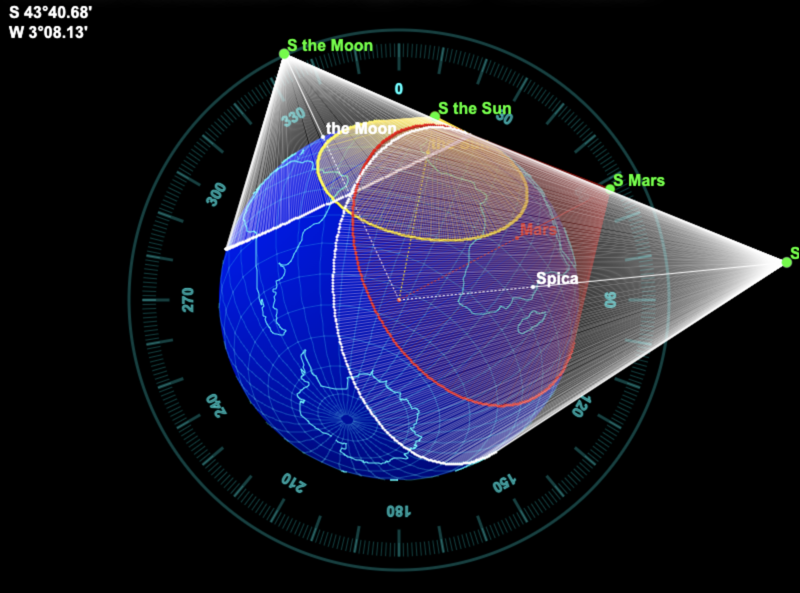

Méthode du Plan des Sommets (MPS)
Méthode élaborée par Yves Robin-Jouan, en 1995-96.
Il s'agit d'une méthode de point astronomique destinée à trouver sa position sur la Terre, à partir de l'observation d'un astre au sextant.
Ceci nécessite - comme dans le cas d'autres méthodes - de connaître l'heure exacte - à la seconde près - de l'observation, afin d'en déduire les coordonnées de l'astre observé.
Ce document est en chantier...
Ceci est un impolementation des projets MPS, et
MPSServer.
Sommaire
Introduction
On veut voir si cette méthode est applicable manuellement - sans recours à l'informatique - pour la partie (de cette méthode) applicable aux astres, les satellites ne concernant
guère ceux qui n'ont qu'un sextant à leur disposition.
À la différence de la méthode des droites de hauteur (Marcq Saint-Hilaire, 1875), cette méthode présente l'avantage de ne pas avoir à recourir à une position estimée.
L'inconvénient potentiel pourrait être la quantité de calculs à mettre en œuvre...
C'est ce qu'on se propose de voir ici.
Le principe de la méthode repose sur les assertions suivantes :
- À un instant donné, si on a observé un astre à une hauteur donnée, on est capable de déterminer
le lieu des points qui voient cet astre à cette hauteur (c'est le très fameux "cercle d'égales hauteurs").
- En observant plusieurs astres, il s'agit de déterminer le lieu des points communs (idéalement du point commun) aux différents cercles de hauteur ainsi obtenus, qui
devrait en toute logique correspondre à la position de l'observateur.
L'équation à résoudre n'est pas triviale..., c'est bien l'objet de ce document.
Mais on voit bien ici que la détermination de ces cercles d'égales hauteurs ne fait en aucun cas intervenir
une position estimée. On a juste besoin ici de connaître :
- La hauteur observée de l'astre
- L'heure de l'observation - destinée à déterminer la position de l'astre observé (position géographique instantanée, aka Pg).
Rappels...
Hauteur et azimut d'un astre
Attention : ce qu'on appelle la hauteur d'un astre dans les lignes qui suivent est l'angle apparent que fait un astre avec l'horizon,
vu de la position de l'observateur. Ceci est visible et illustré sur les figures qui suivent. h est un angle, est non pas une longueur... Il en est pour qui c'est potentiellement ambigu.
Dans les formules suivantes :
D est la déclinaison de l'astre observé (calculée ou trouvée dans les éphémérides)L est la latitude de l'observateurG est la longitude de l'observateurAHG est l'Angle Horaire a Greenwich de l'astre (calculé ou trouvé dans les éphémérides)AHL est l'Angle Horaire Local de l'astre (lequel dépend de AHG et G)
Calcul de la hauteur d'un astre à partir de la position de l'observateur :
$$
H = \arcsin \left( (\sin(L).\sin(D)) + (\cos(L).\cos(D).\cos(AHL)) \right)
$$
Calcul de l'azimut d'un astre à partir de la position de l'observateur :
$$
Z = \arctan \left( \dfrac{\sin(AHL)}{(\cos(L).\tan(D)) - (\sin(L).\cos(AHL))}\right)
$$
Haversine
La formule de haversine permet de connaître, d'un point donné à un autre :
- la distance (GC = Grand Cercle = Great Circle = orthodromique) qui les sépare
- l'angle de route initial
- Le point de départ est
(L1, G1)
- Le point d'arrivée est
(L2, G2)
$$
\begin{align}
a = sin^2(\dfrac{G2 - G1} {2}) + cos(G1) * cos(G2) * sin^2(\dfrac{L2 - L1} {2}) \\
distance = 2 * atan2(\sqrt{a}, \sqrt{1 - a})
\end{align}
$$
écrit aussi
$$
\begin{align}
a = sin^2\left(\dfrac{G2 - G1} {2}\right) + cos G1 . cos G2 . sin^2\left(\dfrac{L2 - L1} {2}\right) \\
c = 2 . atan2(\sqrt{a}, \sqrt{(1-a)}) \\
distance = R . c
\end{align}
$$
où R est le rayon de la Terre.
La formule de haversine inverse permet de connaître la position qu'on atteint :
- en partant d'un point donné
- en suivant un arc de grand cercle (aka orthodromie)
- avec un angle de route initial donné
À ce sujet, les documents Haversine Formula et Formule de Haversine (aka Sinus Verse)
méritent un coup d'œil.
$$
\begin{align}
finalLat = \arcsin(\sin(startLat) * \cos(dist)) + (\cos(startLat) * \sin(dist) * \cos(heading)) \\
finalLng = startLng + atan2(\sin(heading) * \sin(dist) * \cos(startLat), \cos(dist) - (\sin(startLat) * \sin(finalLat)))
\end{align}
$$
Note :
On utilise ici atan2, qui restitue des angles entre $ -\pi $ et $ +\pi $, à la différence de atan, qui restitue des angles entre $ -\dfrac{\pi} {2} $ et $ +\dfrac{\pi} {2} $.
Des liens :
Quelques angles et définitions utiles pour la suite...

La figure ci-dessus est faite pour être aussi simple que possible. Tout est dans le même plan MOP (celui de la feuille).
Et même les astres.
M est la position de l'observateur sur la Terre.
P est le point de la Terre où l'astre est à la verticale. Ce point est appelé le "Pied de l'astre", ou aussi la "Position Géographique Instantanée" de l'astre, souvent notéePg.
La hauteur observée enM de l'astre est notée h. Notez les autres endroits où cette hauteur h est reproduite, à partir de S, et à partir de M vers O.
La hauteur observée est l'angle que fait l'astre avec l'horizon.
L'angle que fait l'astre observé avec le zénith (la verticale de l'observateur) est le complément de cette hauteur, 90 - h, et s'appelle
la Distance Zénithale, notée aussi ζ, la lettre grecque "dzeta" (ça commence par "dz"...).
Note : sur la figure, la direction de l'astre à partir de M est identique (parallèle) à sa direction à partir de O.
Ceci convient à un astre très éloigné de l'observateur. Ça ne serait pas applicable pour un satellite.
Pour le cône, l'angle en O (MOP) est (90° - h).
La distance (grand cercle) M - P est donc (90° - h) * 60.0 nm.
La distance MS est r * (1 / tg(h)), où r est le rayon de la Terre.
Le rayon de la base du cône est r * cos(h).
La distance du centre le la Terre O au sommet S est $ \sqrt{MS^2 + r^2} $.
La distance OS est MS / cos(h).
Comme MS = 1 / tg(h), OS s'écrit aussi (cos(h) / sin(h)) / cos(h), soit
1 / sin(h).
OS = 1 / sin(h).
La distance PS est égale à OS - r.
Donc PS = (1 / sin(h)) - r.
Voici le même schéma (simpliste) avec deux astres. Ici, les astres ne sont pas situés dans le plan de la feuille...

On remarque ici que deux cercles (le vert et le rouge) peuvent présenter deux intersections.
En fait, ils n'en ont qu'une que lorsqu'ils sont tangents l'un à l'autre, ce qui ne constitue pas - et de loin -
la majorité des cas.
Note : Sur la figure ci-dessus, ce qu'on appelle le "Plan des Sommets" est ici perpendiculaire au plan de la feuille.
On en voit les points S1, M, et S2, sur "la tranche" du plan, qui ont ici tous la même cote (z), mais des abscisses (x) et ordonnées (y) très variées.
Voici la même figure, "penchée" vers celui qui la regarde,
ou bien qui s'est levé de sa chaise, la figure est vue de plus haut...

Le "Plan des Sommets" est celui qui est défini par S2, M et S1, il est tangent à la Terre en M.
Le principe
- On est capable de déterminer les points d'un cercle défini par les points qui voient un astre à la même hauteur, à un instant donné.
- Avec plusieurs observations (plusieurs astres), l'observateur se trouve à l'intersection de ces cercles.
-
Pour chaque astre, les paramètres de l'équation sont :
- La hauteur de l'astre observé
- L'heure de l'observation
-
On en déduit :
- Avec les éphémérides, la position du point Pg de l'astre (Déclinaison et AHG), le centre du cercle.
- Par le calcul, le lieu des points (un cercle centré sur ce Pg) qui voient l'astre à la même hauteur (celle qu'on a observée).
Avec plus d'un astre, la position de l'observateur - celle qu'on cherche - est à l'intersection de ces cercles.
Note : On fait figurer plusieurs astres dans les diagrammes ci-dessous - le Soleil, la Lune, Mars, Spica (α Libra). C'est juste pour l'exemple. Il est hautement improbable
de les voir tous en même temps.
Une autre Note : Le sommet de tous les cônes, et la position de l'observateur, se trouvent tous dans le même plan.
D'où - sans doute - le nom de la méthode...
La position de l'observateur - celle qu'on cherche, donc - est à l'intersection de la base des cônes, dans les figures qui suivent,
c'est 47º40.66'N / 3º08.14'W.

Voici la même figure, d'un autre point de vue.
On note que - comme attendu - les génératrices des cônes tangentent la Terre à la base du cône, sur le cercle d'égales hauteurs.

Les cercles se croisent à la position de l'observateur. Ainsi, la position de l'observateur et
toutes celles des sommets des cônes sont dans le même plan. Et elles ne sont pas - loin de là -
nécessairement alignées.

L'échelle des cartes pose ici un premier problème. Voici le contexte ci-dessus représenté sur une carte
Mercator.
Deux premiers éléments sont à noter :
- Les cercles de hauteur ne sont pas ronds sur cette projection.
- Ils peuvent être énormes.
Ils ne sont ronds ni sur une carte Mercator :

Ni sur une carte Anaximandre :
 En fait, ils ne sont ronds que sur un globe.
En fait, ils ne sont ronds que sur un globe.
En pratique
Vaste sujet... Ça vient !
Une remarque à propos du point par droites de hauteurs, de Marcq Saint-Hilaire
Pour mettre cette méthode en œuvre, on mesure la hauteur d'un astre au sextant, qu'on compare à ce qu'on
devrait observer si on était là où l'estime nous situe, cette hauteur "éstimée" est calculée grâce aux éphémérides et aux tables de Dieumegard, pour l'heure (exacte)
de l'observation.
La droite de hauteur obtenue est ensuite portée sur la carte, perpendiculairement à l'azimut de
l'astre observé, lequel est calculé (par les tables de Bataille), et non pas observé !
Ceci justifie - entre autres - la raison pour laquelle un intercept de plus de 15 miles est considéré comme suspect. Le
calcul de l'azimut se faisant à partir de la position estimée, une "mauvaise" estime donne lieu
à un azimut potentiellement érroné.
Une première approche...
On va partir - pour l'instant - d'une position estimée, d'où on pourra calculer l'azimut des astres observés à l'aide des tables de Bataille.
On pourra alors calculer le point du cercle d'égales hauteur (de cet astre) pour cet azimut.
Exemple
On 2025-Aug-20 10:40:31 UTC:
the Sun Decl 12º16.80'N, GHA 339º17.40', from 47º40.66'N / 3º08.14'W.
Seeing the Sun at altitude 49º22.52', in the 142.65º
Une approche graphique ?
Le challenge ici est donc de trouver pour tous les cercles le (ou les) point(s) commun(s).
On peut essayer graphiquement, pour la latitude, puis pour la longitude...
Mais le calcul des coordonnées de chaque cercle (ou cône) requiert des ressources et un nombre d'opérations considérables (effrayant si on fait ça manuellement)...
On peut cependant facilement calculer le rayon de la base du cône (du cercle). Les coordonnées du centre
sont restituées par les éphémérides.
Mais deux problèmes se posent alors :
- Le cercle n'est rond que sur une sphère (un globe), les cartes dont on dispose (Mercator, Lambert, Stéréographiques, etc) ne permettent certainement
pas de tracer ces cercles avec un compas, ni avec aucun outil connu.
- Quand bien même on parviendrait à tracer ce cercle, il est parfois tellement vaste - à l'échelle de la Terre - que
les coordonnées des intersections avec un autre cercle seraient fort imprécises. C'est à cause de ça qu'on a - dans le contexte des droites de hauteur -
élaboré Canevas Mercator et autres Plotting Sheets...
Si on part d'une position estimée, on revient à un point par droites de hauteurs classique (Saint-Hilaire).
Si on a trois astres, on a trois droites, et on est à leur intersection...
D'où la question : Quel est alors dans ce contexte (graphique) l'intéret de la Méthode du Plan des Sommets ?
La résolution du problème ci-dessus par les droites de hauteur produit la figure suivante :

Le tooltip sur la figure représente les coordonnées de l'intersection des droites de hauteur (en bleu).
Et ceci est réalisable sans informatique, ni même électricité.
Approche itérative
Le problème est que deux cercles peuvent avoir deux intersections...
C'est ce qui est restitué ci-dessous, dans les lignes 1st Position et
2nd Position.
Il y a un premier test qui semble fonctionner, voir mps.pg.PlayGround01.java.
On procède en plusieurs fois - ambiance méthode de Newton.
La méthode de Newton est fort pratique quand on cherche la solution d'une équation (ou d'un système d'équations)
très (voire trop) complexe. La solution à laquelle on arrive n'est pas "exacte", mais on a une idée de sa précision, et c'est déjà pas mal.
Cette méthode est particulièrement séduisante dans un contexte informatique.
La méthode de Newton, en deux mots.
La façon de procéder est la suivante :
- Admettons pour cet exemple qu'on cherche la valeur de
x pour laquelle y = f(x) = 0. f(x) est cette fonction (pas nécessairement une fonction, d'ailleurs, ça peut être une conique, ou n'importe quelle autre acrobatie), dont on a la formule, mais dont l'obtention de la (ou des) racine(s) fait peur.
- On va partir d'une valeur de
x pour laquelle on sait qu'`y est d'un côté du résultat attendu (qui est donc 0), qu'on va finir par se retrouver de l'autre en faisant progresser x d'une valeur deltaX.
- On commence. On part de
x, on calcule y, on trouve une valeur inférieure à 0. On note cet x.
- On continue, on augmente
x de detlaX. On recalcule y.
- Tant que le signe de
y ne change pas, on continue.
- Le signe de
y change ! On note la valeur de x, on l'appelle x2.
- Et la précédente valeur de
x, on l'appelle x1.
- On reprend le procédé au début, mais entre
x1 et x2, avec un deltaX plus petit (par exemple divisé par 10).
- Et on arrête - arbitrairement - quand la précision requise (analogue à
deltaX) est atteinte. La racine (le résultat) recherchée est entre x1 et x2, lesquels sont
séparés d'une valeur deltaX. Il appartient dès lors à l'utilisateur de savoir si cette précision est suffisante, ou s'il faut poursuivre les itérations.
Dans le cas qui nous occupe, on commencera avec Z (Z est ici un azimuth, rien à voir avec la cote d'un repère cartésien, qui s'appelle z aussi) allant de 0 à 360, tous les 0.1 degrés.
Le nombre d'itérations correspond au nombre de fois où on divisera cet intervalle de degrés par 10 (ce 10 est arbitraire). Ainsi, avec ce 10,
si on demarre avec un pas de 0.1 (10-1) degré, et qu'on procède en 4 itérations, on finira avec un pas de 10-4 degrés, mais sur un intervalle (un arc de cercle)
beaucoup plus restreint que lors de la première itération (qui faisait tout le cercle). D'où l'intérêt de la méthode, merci Isaac !
Exemple (tous les détails sont dans le code)
Dans les exemples ci-dessous, la hauteur des astres est celle observée à partir de la position 47º40.66'N / 3º08.14'W.
Les astres par défaut (dans le script) sont la Lune et le Soleil.
$ ./test.one.sh
OK. Proceeding with user's input.
1st Position between 2º56.79'N / 19º14.49'W and 2º56.79'N / 19º14.49'W, dist 0.00 nm.
2nd Position between 47º40.66'N / 3º08.14'W and 47º40.66'N / 3º08.14'W, dist 0.00 nm.
Done
$
On peut aussi fournir les paramètres directement sur la command line:
$ ./test.one.sh --time-1:2025-08-20T10:40:31 --gha-1:339º17.40 --decl-1:N12º16.80 --alt-1:49º22.52 --time-2:2025-08-20T10:40:31 --alt-2:66º33.85 --gha-2:13º41.85 --decl-2:N25º46.13 --verbose:false
OK. Proceeding with user's input.
1st Position between 2º56.79'N / 19º14.49'W and 2º56.79'N / 19º14.49'W, dist 0.00 nm.
2nd Position between 47º40.66'N / 3º08.14'W and 47º40.66'N / 3º08.14'W, dist 0.00 nm.
Done
$
Plusieurs exemples figurent dans le package mps.pg, comme mps.pg.PlayGround08.java.
From the MPSServer directory:
$ ../../gradlew clean shadowJar
$ java -cp build/libs/MPSServer-1.0-all.jar mps.pg.PlayGround08
Calculation launched for 2025-Sep-26 03:15:00 UTC
Sun : ObsAlt: -27º59.56' (-27.992677), GHA: 230º54.36' (230.905951), Decl: 1º18.81'S (-1.313542)
Moon : ObsAlt: -64º38.88' (-64.647941), GHA: 186º45.86' (186.764356), Decl: 22º29.58'S (-22.493011)
----------------------------------------------------
Saturn : ObsAlt: 22º16.56' (22.276078), GHA: 54º39.20' (54.653345), Decl: 3º02.88'S (-3.048023)
Jupiter : ObsAlt: 33º59.69' (33.994908), GHA: 300º20.17' (300.336092), Decl: 21º40.69'N (21.678212)
Rigel : ObsAlt: 28º51.39' (28.856483), GHA: 334º59.47' (334.991105), Decl: 8º10.09'S (-8.168236)
Aldebaran: ObsAlt: 55º20.72' (55.345321), GHA: 344º35.06' (344.584258), Decl: 16º33.74'N (16.562267)
1 - Saturn & Jupiter
After 4 iterations:
1st position between 47º40.66'N / 3º08.14'W (47.677668 / -3.135668) and 47º40.66'N / 3º08.14'W (47.677643 / -3.135670), dist 0.00 nm.
2nd position between 10º54.28'S / 13º14.41'E (-10.904689 / 13.240187) and 10º54.28'S / 13º14.41'E (-10.904689 / 13.240187), dist 0.00 nm.
2 - Saturn & Rigel
After 4 iterations:
1st position between 47º40.66'N / 3º08.14'W (47.677668 / -3.135668) and 47º40.66'N / 3º08.14'W (47.677678 / -3.135640), dist 0.00 nm.
2nd position between 63º12.51'S / 12º06.38'W (-63.208440 / -12.106294) and 63º12.51'S / 12º06.38'W (-63.208440 / -12.106294), dist 0.00 nm.
3 - Rigel & Jupiter
After 4 iterations:
1st position between 27º54.85'S / 86º36.17'E (-27.914095 / 86.602860) and 27º54.84'S / 86º36.17'E (-27.914056 / 86.602848), dist 0.00 nm.
2nd position between 47º40.66'N / 3º08.14'W (47.677678 / -3.135640) and 47º40.66'N / 3º08.14'W (47.677678 / -3.135640), dist 0.00 nm.
4 - Rigel & Aldebaran
After 5 iterations:
1st position between 47º35.55'N / 3º20.13'W (47.592451 / -3.335450) and 47º35.51'N / 3º20.09'W (47.591775 / -3.334816), dist 0.05 nm.
2nd position between 48º03.44'N / 2º13.10'W (48.057372 / -2.218396) and 48º03.44'N / 2º13.10'W (48.057372 / -2.218396), dist 0.08 nm.
-----------------------------
Full Intersection Calculation took 5,398 ms (System Time)
-----------------------------
Found intersection at 47º40.66'N / 3º08.14'W
=> Compare to original position: 47º40.66'N / 3º08.14'W
==> Difference/offset: 0.00 nm
------- End of the story -------
... Encore un fois, les détails sont dans le code.
Ceci semble fonctionner comme on l'attend, mais il est pour le moment totalement inenvisageable de faire
le boulot sans un calculateur - programmable.
Une première approche interactive
Un script interactif, cones.resolution.sh :
$ ./cones.resolution.sh
You will be prompted to enter body names, dates, and observed altitudes.
Body name: Mars
Date (duration format): 2025-10-07T15:36:00
Observed Altitude: 21.98
More [n]|y ? > y
Ok, another one.
Body name: Venus
Date (duration format): 2025-10-07T15:36:00
Observed Altitude: 14.014
More [n]|y ? > y
Ok, another one.
Body name: Altair
Date (duration format): 2025-10-07T15:36:00
Observed Altitude: 32º28.63'
More [n]|y ? >
Now proceeding.
Read line [Body=Mars;Date=2025-10-07T15:36:00;ObsAlt=21.98]
Body : [Mars]
Date : [2025-10-07T15:36:00]
Alt : [21.98] => [21.980000]
Calculation launched for 2025-Oct-07 15:36:00 UTC
For Mars at 2025-Oct-07 15:36:00 UTC, ObsAlt should be 21.942255 ( 21º56.54')
Read line [Body=Venus;Date=2025-10-07T15:36:00;ObsAlt=14.014]
Body : [Venus]
Date : [2025-10-07T15:36:00]
Alt : [14.014] => [14.014000]
Calculation launched for 2025-Oct-07 15:36:00 UTC
For Venus at 2025-Oct-07 15:36:00 UTC, ObsAlt should be 14.013912 ( 14º00.83')
Read line [Body=Altair;Date=2025-10-07T15:36:00;ObsAlt=32º28.63']
Body : [Altair]
Date : [2025-10-07T15:36:00]
Alt : [32º28.63'] => [32.477167]
Calculation launched for 2025-Oct-07 15:36:00 UTC
For Altair at 2025-Oct-07 15:36:00 UTC, ObsAlt should be 32.477156 ( 32º28.63')
We have 3 bodies.
Mars: ObsAlt: 21º58.80' (21.980000), GHA: 32º35.17' (32.586194), Decl: 15º05.10'S (-15.084996)
Venus: ObsAlt: 14º00.84' (14.014000), GHA: 77º04.14' (77.068942), Decl: 4º22.30'N (4.371674)
Altair: ObsAlt: 32º28.63' (32.477167), GHA: 312º31.51' (312.525102), Decl: 8º56.33'N (8.938912)
[0, 1], Mars and Venus
1 - Mars & Venus
After 4 iterations:
1st position between 47º37.75'N / 3º07.46'W (47.629198 / -3.124387) and 47º37.75'N / 3º07.46'W (47.629210 / -3.124347), dist 0.00 nm.
2nd position between 70º06.79'S / 99º21.31'W (-70.113119 / -99.355096) and 70º06.79'S / 99º21.31'W (-70.113119 / -99.355096), dist 0.00 nm.
[0, 2], Mars and Altair
2 - Mars & Altair
. . .
6 - Altair & Venus
After 4 iterations:
1st position between 19º02.37'S / 3º31.58'W (-19.039437 / -3.526361) and 19º02.37'S / 3º31.58'W (-19.039445 / -3.526371), dist 0.00 nm.
2nd position between 47º40.65'N / 3º08.15'W (47.677496 / -3.135769) and 47º40.65'N / 3º08.15'W (47.677496 / -3.135769), dist 0.00 nm.
End of permutations, 6 intersections
-----------------------------
Full Intersection Calculation took 7,348 ms (System Time)
-----------------------------
70º06.78'S / 99º21.30'W too far from 47º38.60'N / 3º09.58'W (8176.094466)
47º40.65'N / 3º08.15'W too far from 70º06.78'S / 99º21.30'W (8178.358130)
. . .
47º38.60'N / 3º09.58'W too far from 48º18.67'S / 41º08.50'E (6212.995889)
19º02.37'S / 3º31.58'W too far from 47º38.60'N / 3º09.58'W (4008.198989)
47º40.65'N / 3º08.15'W too far from 19º02.37'S / 3º31.58'W (4010.258270)
PointMap has 4 entries
Found (avg) intersection at 47º39.00'N / 3º08.38'W
------- End of the story -------
Done
Une première implémentation, web front-end et HTTP/REST back-end

La position calculée apparait dans la boîte "MPS Data"

Les calculs sont effectués par le serveur, à l'aide de services REST, ou sur le client, en ES6.
Un exemple plus complet est décrit ici.
Résoudre l'équation de la distance entre les points de deux cercles...
Il doit y avoir un - voire deux - point(s) des cercles où cette distance est nulle.
Pour chaque cercle - base du cône - on a
- La hauteur de l'astre observé
- Les coordonnées du pied de l'astre (point Pg)
Le rayon du cercle est déduit de la hauteur observée h, comme déjà vu plus haut,
c'est r * cos(h).
À l'aide de la formule de Haversine inverse, on peut déterminer les coordonnées de chaque point du cercle recherché.
$$
\begin{cases}
finalLat = \arcsin(\sin(pgLat) * \cos(radius)) + (\cos(pgLat) * \sin(radius) * \cos(Z)) \\
finalLng = pgLng + atan2(\sin(Z) * \sin(radius) * \cos(pgLat), \cos(radius) - (\sin(pgLat) * \sin(finalLat)))
\end{cases}
$$
Dans les formules ci-dessus :
pgLat est la latitude du pied de l'astrepgLng est la longitude du pied de l'astreradius est le rayon du cercleZ est l'azimuth - le relèvement - du point recherché du cercle, à partir de son centre (le pied de l'astre).
Z va de 0° à 360°, soit de 0 à 2×Π radians, pour définir un cercle complet.
Tous les angles (y compris radius) sont à exprimer en radians.
Les valeurs finalLat et finalLng sont ainsi les coordonées du point du cercle de centre Pg, de rayon radius, pour un angle Z.
Ces formules sont donc la base de l'équation à résoudre.
Pour trouver les intersections entre deux cercles définis comme ci-dessus,
le problème à poser - et résoudre - est donc :
- Avec
Pg1 et Pg2 définis par les éphémerides à l'heure de l'observation, pour les astres observés,
radius1 et radius2 définis par la hauteur des astres observés
- Pour les cercles définis par
Pg1[pg1Lat, pg1Lng], radius1, et Pg2[pg2Lat, pg2Lng], radius2,
- On cherche quels sont les points de la Terre où
finalLat1 = finalLat2 et finalLng1 = finalLng2 !
- Les variables cruciales sont ici
Z1 et Z2, les autres (Pg1[pg1Lat, pg1Lng], radius1, et Pg2[pg2Lat, pg2Lng], radius2) étant invariantes dans le contexte du calcul.
Le système complet devient ainsi
$$
\begin{cases}
finalLat1 = \arcsin(\sin(pg1Lat) * \cos(radius1)) + (\cos(pg1Lat) * \sin(radius1) * \cos(Z1)) \\
finalLng1 = pg1Lng + atan2(sin(Z1) * \sin(radius1) * \cos(pg1Lat), \cos(radius1) - (\sin(pg1Lat) * \sin(finalLat1))) \\
finalLat2 = \arcsin(\sin(pg2Lat) * \cos(radius2)) + (\cos(pg2Lat) * \sin(radius2) * \cos(Z2)) \\
finalLng2 = pg2Lng + atan2(sin(Z2) * \sin(radius2) * \cos(pg2Lat), \cos(radius2) - (\sin(pg2Lat) * \sin(finalLat2))) \\
finalLat1 = finalLat2 \\
finalLng1 = finalLng2
\end{cases}
$$
On va distinguer les équations concernant la latitude de celles qui concernent la longitude.
On commence par les latitudes
On obtient alors
$$
\begin{cases}
finalLat1 = \arcsin(\sin(pg1Lat) * \cos(radius1)) + (\cos(pg1Lat) * \sin(radius1) * \cos(Z1)) \\
finalLat2 = \arcsin(\sin(pg2Lat) * \cos(radius2)) + (\cos(pg2Lat) * \sin(radius2) * \cos(Z2)) \\
finalLat1 = finalLat2
\end{cases}
$$
Ou aussi
$$
\arcsin(sin(pg1Lat) * \cos(radius1)) + (\cos(pg1Lat) * \sin(radius1) * \cos(Z1)) = \arcsin(\sin(pg2Lat) * \cos(radius2)) + (\cos(pg2Lat) * \sin(radius2) * \cos(Z2))
$$
Si on pose A1 = sin(pg1Lat) * cos(radius1) et B1 = cos(pg1Lat) * sin(radius1), on a alors
$$
\arcsin(A1) + (B1 * \cos(Z1)) = \arcsin(A2) + (B2 * \cos(Z2))
$$
ou de manière encore plus concise, comme Z1 et Z2 sont les seules variables, A1, A2, B1 et B2
étant connus dans ce contexte :
$$
f1(z) = \arcsin(A1) + (B1 * \cos(z)) \\
f2(z) = \arcsin(A2) + (B2 * \cos(z))
$$
On cherche donc les valeurs Z1 et Z2 pour lesquelles
```
f1(Z1) = f2(Z2)
```
... qui constitue donc un système de 1 équation à 2 inconnues. Ouille.
Les longitudes ensuite
$$
\begin{cases}
finalLng1 = pg1Lng + atan2(sin(Z1) * sin(radius1) * cos(pg1Lat), cos(radius1) - (sin(pg1Lat) * sin(finalLat1))) \\
finalLng2 = pg2Lng + atan2(sin(Z2) * sin(radius2) * cos(pg2Lat), cos(radius2) - (sin(pg2Lat) * sin(finalLat2))) \\
finalLng1 = finalLng2
\end{cases}
$$
Ou aussi, comme précédemment
$$
pg1Lng + atan2(sin(Z1) * sin(radius1) * cos(pg1Lat), cos(radius1) - (sin(pg1Lat) * sin(finalLat1))) = pg2Lng + atan2(sin(Z2) * sin(radius2) * cos(pg2Lat), cos(radius2) - (sin(pg2Lat) * sin(finalLat2)))
$$
On note cette fois que ces formules font intervenir les valeurs finalLat1, et finalLat2, résultats du système précédent...
Cette fois-ci, on pose
$$
\begin{align}
C1 = pg1Lng \\
C2 = pg2Lng \\
D1 = \sin(radius1) * \cos(pg1Lat) \\
D2 = \sin(radius2) * \cos(pg2Lat) \\
E1 = \cos(radius1) \\
E2 = \cos(radius2)
\end{align}
$$
Et on a
$$
C1 + atan2(\sin(Z1) * D1, E1 - (\sin(C1) * \sin(finalLat1))) = C2 + atan2(\sin(Z2) * D2, E2 - (\sin(C2) * \sin(finalLat2)))
$$
On définit les même sortes de fonctions qu'auparavant, g1 et g2 :
$$
\begin{align}
g1(z, fl) = atan2(sin(z) * D1, E1 - (sin(C1) * sin(fl))) \\
g2(z, fl) = atan2(sin(z) * D2, E2 - (sin(C2) * sin(fl)))
\end{align}
$$
Avec les fl (finalLat1 et finalLat2) trouvées précédemment, on cherche Z1 et Z2 où :
$$
g1(Z1, fl1) = g2(Z2, fl2)
$$
qu'on peut donc aussi écrire
$$
g1(Z1, f1(Z1)) = g2(Z2, f2(Z2))
$$
... ce qui ne simplifie guère notre affaire.
À suivre...
OlivSoft strikes again